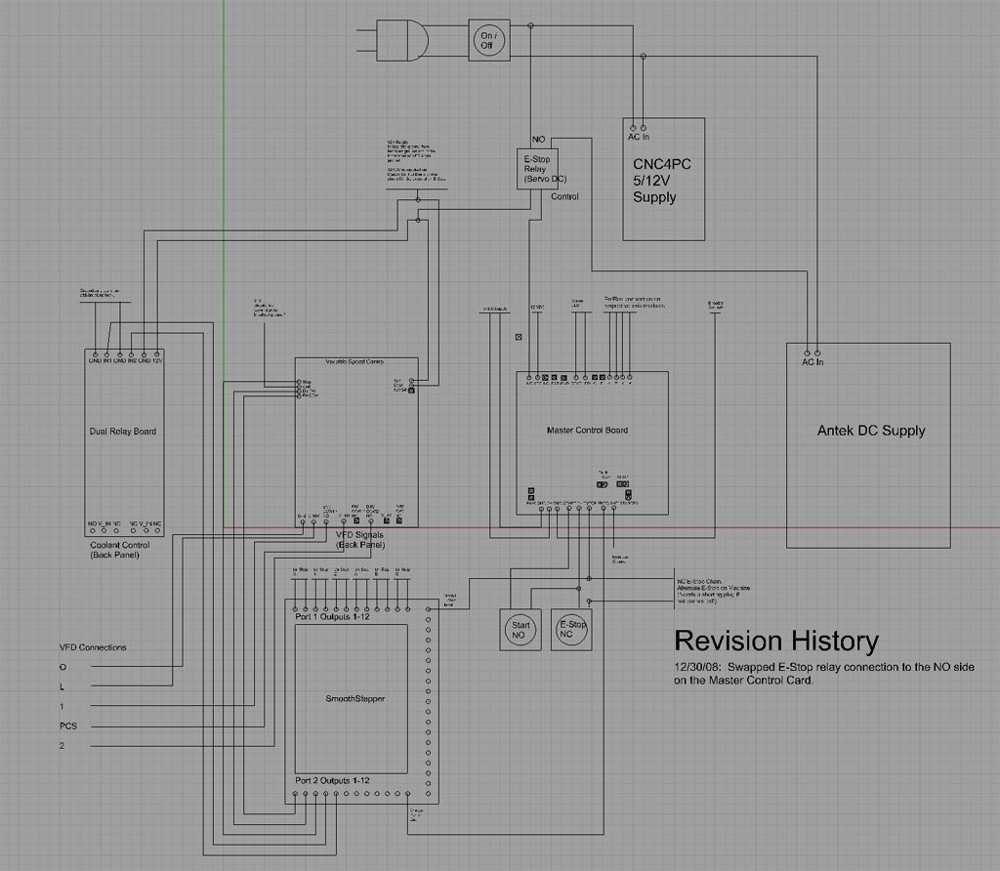
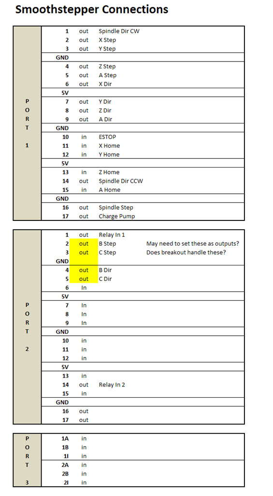
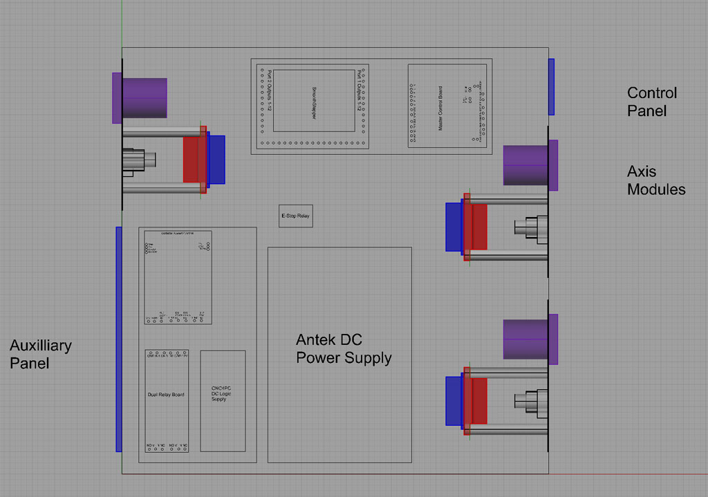

CNC4PC and Smoothstepper Electronics
PC Interface (Breakout Board) and Control Signal Map
for the IH Mill
This combination of boards specifically addresses the use of the Smoothstepper motion control board, which improves Mach3 performance quite a bit, as well as the use of servos and the need to have electronics that will stop all motion if a servo faults.
Here are all the control signals
that have to get from Mach 3 to the PC to some component in the enclosure:
Outputs
- A, X, Y, and Z-Axis Step
+ Dir signals to the Geckodrives. Requires 8 outputs.
- Aux 1 and Aux 2 Axes Step
+ Dir, possibly for a tool changer. Requires 4 outputs.
- Safety Charge Pump: 1 output
- VFD PWM speed signal: 1 output
- VFD start/stop and direction
signals: 2 outputs
- Coolant 1 and Coolant 2 relays:
2 outputs
Inputs
- A, X, Y, and Z-axis limit
switches: Requires 4 inputs.
- Spindle index pulse (in case
Mach 3 ever does rigid tapping?): 1 input
The Smoothstepper offers 2
simulated parallel ports and a total of 24 outputs and 10 inputs. I need
18 outputs and maybe 5 inputs for this project so I'll be fine with a
Smoothstepper. In fact, I'll have a spare 6 outputs and 5 or 6 inputs.
CNC4PC offers the Smoothstepper
and a nice little breakout board to go with it:
CNC4PC
Smoothstepper $165
Simulates 2 parallel ports
from a USB. 34 I/O's:
- Port 1: 12 outputs, 5 inputs
- Port 2: 12 outputs, 5 inputs
- or - 4 outputs and 13 inputs
- Port 3: 6 inputs (3 differential
and 3 single-ended)
CNC4PC
Smoothstepper Terminal Board $29.55
A breakout board to allow point
to point wiring for a Smoothstepper.
Power Circuit Module
When I hit the E-stop on this
beast, I want everything to stop! Also, if the charge pump signal from
the PC goes dead, that should trigger an E-stop as well. If there is a
servo fault (possibly because a back g-code program has the spindle chewing
at high speed into my Kurt Vise or mill table!), I want an E-stop. And
lastly, the E-stop should be a normally closed circuit, so that a break
in the wiring triggers the E-stop.
I'll be using the CNC4PC C17
Master Control Board to handle all this power control. It's set up to
accept the servo fault signals from Gecko Servo drives (which are a bit
idiosyncratic), an E-stop circuit, a charge pump input, and a Start button,
and do the right thing with an output. I'll use that output to control
a larger solid state relay (I'll be using a 20 amp / 240 VAC unit) that
controls the AC power into the servo DC supply. The output provides a
5VDC signal to control the relay which will be run in a Normally Open
configuration. Removing power from the relay will therefore open the contacts
and cut AC power to the servo DC supply.
In addition, the +5VDC signal
will be used as the +5VDC supply for the spindle control board and the
coolant relay board. These boards will also be connected in such a fashion
that if the 5VDC supply fails, the spindle and coolant will be shut off.
I purchased a couple of E-stop
switches from CNC4PC. These are the standard red plungers that must be
rotated and unlocked before you can restore operation after they have
been triggered. I plan to mount one on the CNC electronics enclosure where
it'll be close to the computer console, and the other will be mounted
on the mill spindle in place of the current power switch so it's handy
if you're over by the machine.
CNC4PC
C17 Master Control Board $48.00
See the description above for
what this board does.
CAndCNC
ACM-100 $59.95 + DCM-100 $59.95
Control up to 25A of AC current
with a front panel or other lower voltage signal. Has a an available DCM-100
load dump circuit ($59.95) to stop the juice right now! The DCM-100 acts
as DC distribution for up to 4 axes. Use it in place of heavy duty terminal
blocks.
CNC4PC
Safety Charge Pump $22.50
Handy little card implements
Mach 3 Safety Charge Pump functionality.
Spindle and Coolant Control Module
See the VFD
and Spindle Control page for full details. I'll be using a CNC4PC
Variable Speed Control board and a Hitachi VFD.
Other Electronics
We need DC at +5 VDC and +12
VDC for various cards, so the CNC4PC
power supply does a reasonable job for about $25.
Other Enclosure Electronics Resources
Haven't made any final decisions,
but here are some additional candidates I am considering:
Homann
Designs Mini DIN breakout board $15
Gives acccess to the 6 pins
of a PS/2 style mini-DIN connector.
Homann
Designs ModIO Pendant $387
Full on pendant with E-stop,
MPG, and the works. Connects to the PC via a serial cable.
A Note About CNC4PC and Homann
Arturo runs CNC4PC and Peter runs Homann. These two gents have been wonderful to deal with, their products are excellent, and I highly recommend them.
Overall Scematic
Here is the overall
schematic for the enclosure:

Preliminary,
and for informational use only. Do not use as a plan for your CNC machine!
For clarity, I
have not specified the wiring to the axis modules. Each axis module requires
servo DC and ground from the DC supply and Geckodrive step/dir signals
from the Smoothstepper. The wiring of an individual axis module is covered
on the axis module page.
Some points to
call out on this schematic:
- The details
for how the VFD and spindle control is achieved may be found on the VFD
page.
- The E-stop functionality
is handled by the master control board. An E-stop condition is triggered
by a manual E-stop switch, a charge pump failure (i.e. the PC is no longer
communicating with the system), or a servo fault as signalled to the Master
Control Board by the Geckodrive. When an E-stop is generated, the normally
closed VCC supply access (+12VDC) is shut off. This causes the main AC
supply relay to open, and the 12VDC supply to the spindle control and
coolant relay boards to be shut off. The AC supply relay supplies AC to
the DC Servo Power supply.
- There are 3
front panel controls: On/Off, which physically interrupts the main AC
relay. E-stop (the other is mounted on the mill itself) which will shut
the system down if pressed. And lastly, a Start button that is used to
tell the Master Control Board to turn off the E-stop condition and make
the spindle, coolant, and DC servo supply available for operation.
Smoothstepper Pinout
Here is how I'll
be using the I/O pins on the Smoothstepper ports:

The yellow shading
on Port 2 pins 2-5 indicates some confusion on my part. The Smoothstepper
at this stage is not very well documented, and there seems to be no doc
at all on my CNC4PC breakout board that the Smoothstepper plugs into.
My desire is to use those 4 pins as step/dir outputs to control the remaining
2 axes, but I am not sure exactly how to make this work. Either the breakout
board won't handle it at all, in which case I won't have enough outputs
to run 2 more axes, or more likely I have to access some setup utility
to decide which way these bi-directional parallel pins are to be used
(as inputs or outputs). Needing a B and C axis is somewhere out in the
future, so I'm not going to worry about it while doing the initial conversion.
I expect to use them to control a toolchanger rather than to actually
try to run a 5th or 6th axis as well.
Enclosure
Board Layout
Based on the schematic
above, one can get an idea of what the wiring paths will look like. Here
is a schematic of the mounting positions for the various sub-boards inside
the enclosure:
